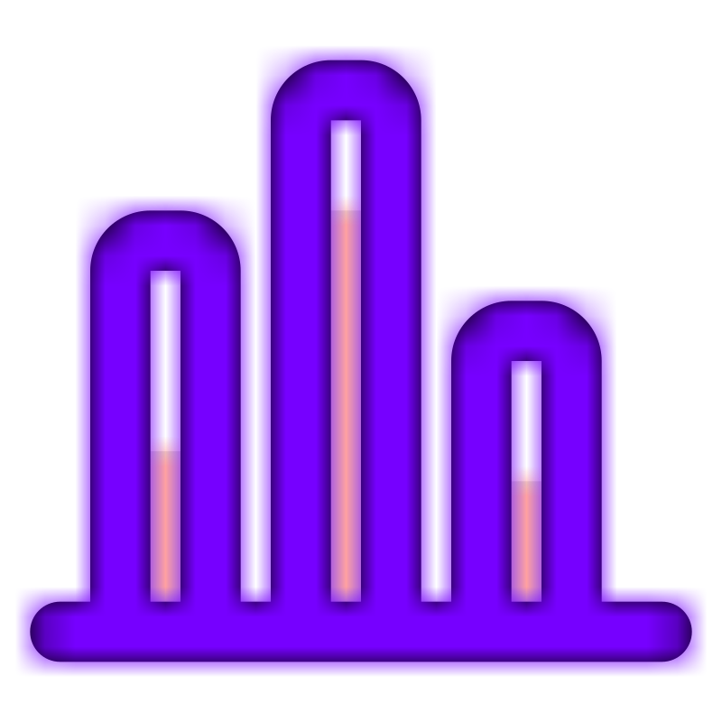

PNG, GIF, JPEG (JPG)
-
PNG
Tiene mucha calidad. Es ideal para colores planos. Además soporta transparencias.
-
GIF
Soporta animaciones.
-
JPEG (JPG)
Mapa de bits. Es un formato ligero, ideal para fotos realistas o con mucho detalle.
SVG
SVG (Scalable Vector Graphics) es un formato vectorial poco conocido pero muy útil para su uso online por su flexibilidad y por la capacidad de ofrecer gráficos con calidad.
